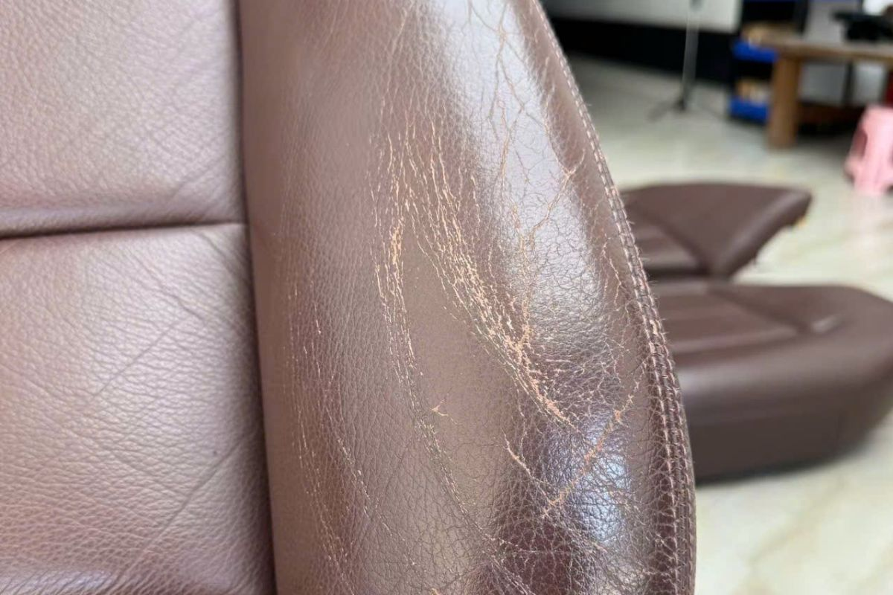

Phục hồi da nội thất ô tô: nên bắt đầu từ đâu?
Bề mặt da có thể bạc màu, trầy xước, khô hoặc bong lớp hoàn thiện. Trước khi xử lý, cần xác định đúng tình trạng và phạm vi thay vì chỉ chọn màu theo cảm tính.

Kiểm tra tình trạng bề mặt
Quan sát vùng thường xuyên tiếp xúc, nếp gấp, đường may và phần tiếp giáp với các vật liệu khác. Nếu bề mặt rách, thủng hoặc nền đã yếu, cần đánh giá phần sửa nền trước khi nói đến màu và lớp hoàn thiện.
Thống nhất phạm vi phục hồi
Cần làm rõ xử lý một vùng, một chi tiết hay đồng bộ nhiều chi tiết. Màu cũ, ánh sáng trong xe và độ khác nhau giữa da thật, da công nghiệp hoặc nhựa đều ảnh hưởng đến cách nhìn màu sau hoàn thiện.
Thử mẫu trước khi làm
Mẫu thử giúp kiểm tra màu, độ bóng và cảm giác bề mặt. Hướng dẫn pha, số lớp và thời gian khô phải theo tài liệu của đúng sản phẩm đang sử dụng.
Bàn giao và chăm sóc
Ảnh trước và sau, phạm vi đã làm và hướng dẫn chăm sóc nên được lưu cùng hồ sơ. Tránh dùng chất tẩy không rõ thành phần trên bề mặt vừa phục hồi.